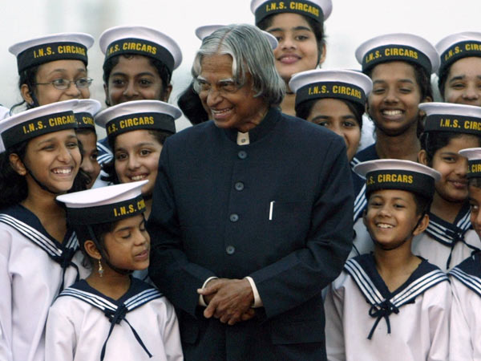

Dr. A. P. J. Abdul Kalam
The Missile Man & the People's President

Dr. A.P.J. Abdul Kalam is a great source of inspiration to the younger generation.
A quick look at Dr. Kalam's life
- 15 October 1931 – Born in Rameswaram, Tamil Nadu
- 1954 – Graduated in Physics from Saint Joseph's College, Tiruchirappalli followed by aerospace engineering in Madras Institute of Technology, Chennai
- 1960 – Joined the Aeronautical Development Establishment of the Defence Research and Development Organisation (DRDO) as a scientist
- 1965 – Started work on an expandable rocket project independently at DRDO
- 1969 – Was transferred to the Indian Space Research Organisation (ISRO)
- 1970's – Directed two projects, Project Devil and Project Valiant, which sought to develop ballistic missiles from the technology of the successful SLV programme
- 1980’s – Project director of India's first Satellite Launch Vehicle (SLV-III) which successfully deployed the Rohini satellite in near-earth orbit, played a pivotal role in developing Agni (Medium-range ballistic missile) and Prithvi (Short Range Ballistic Missile)
- July 1992 to December 1999 – served as the Chief Scientific Adviser to the Prime Minister and the Secretary of the DRDO and also served as the Chief Project Coordinator for Pokhran-II nuclear tests
Came to be known as the Missile Man of India for his work on the development of ballistic missile and launch vehicle technology
- 1998 – developed a low cost coronary stent along with cardiologist Soma Raju, named the "Kalam-Raju Stent". In 2012, the duo designed, "Kalam-Raju Tablet" for health care in rural areas
- 25 July 2002 to 25 July 2007 – 11th President of India, affectionately known as the People's President
- Post-Presidency, Kalam became a professor of Aerospace Engineering at Anna University, a visiting professor at a number of universities and an adjunct at many other academic and research institutions across India
- May 2012 – launched a programme for the youth of India called the “What Can I Give Movement”, with a central theme of defeating corruption
- 15 October, 2010 – 79th birthday recognized as ‘World Students Day’ by United Nations
- Authored numerous influential and inspirational books - “India 2020”, “wings of fire”, “Ignited Minds”, “Mission India”, “Inspiring Thoughts”, “The Luminous Sparks”, “Target 3 Billion” etc.
- Awards and Honors – Received Padma Bhushan (1981), Padma Vibhushan (1990), Bharat Ratna (1997), Ramanujan Award (2000), King Charles II Medal, Honorary Doctorate of Science and Technology (2007), International von Karman Wings Award and Hoover Medal (2009), Von Braun Award (2013), Doctor of Science (2014) etc.
- 27 July 2015 – While delivering a lecture on "Creating a Livable Planet Earth" at the Indian Institute of Management Shillong, Kalam collapsed and died from an apparent cardiac arrest.
"A scientist and statesman, Dr. Kalam rose from humble beginnings to become one of India’s most accomplished leaders, earning esteem at home and abroad. An advocate for stronger U.S.-India relations, Dr. Kalam worked to deepen our space cooperation, forging links with NASA during a 1962 visit to the United States. His tenure as India’s 11th president witnessed unprecedented growth in U.S.-India ties. Suitably named “the People’s President,” Dr. Kalam’s humility and dedication to public service served as an inspiration to millions of Indians and admirers around the world."
- The USA President Barack Obama
To get a complete picture of this incredible and inspiring human being, do visit his Wikipedia entry.
Written & Coded by Kishan Kumar Jaiswal